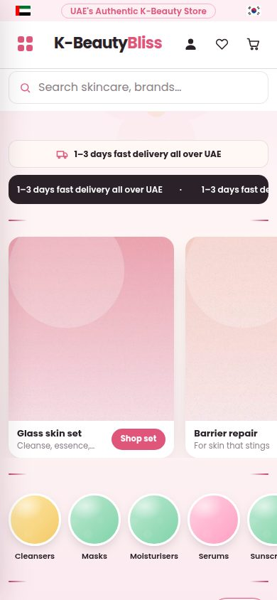
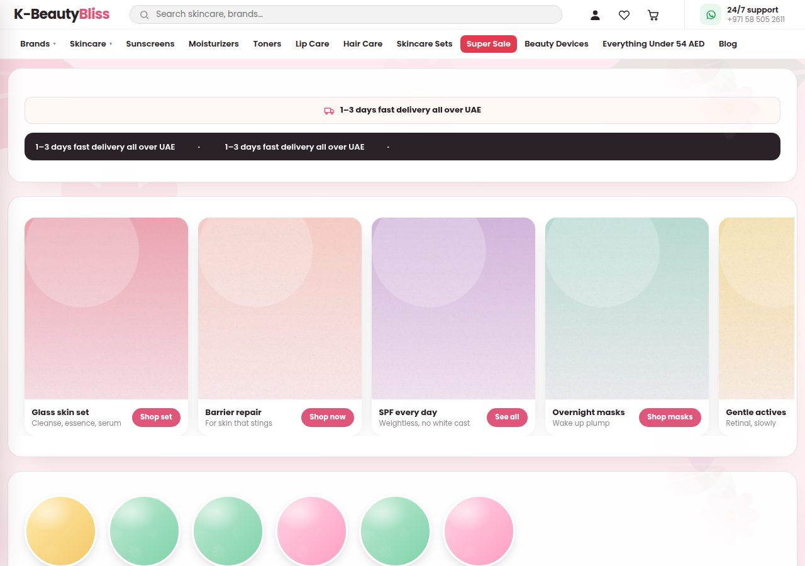
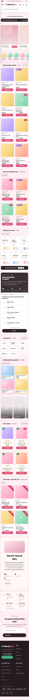
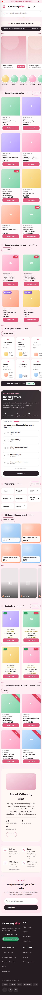
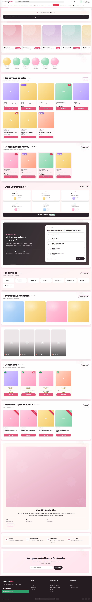
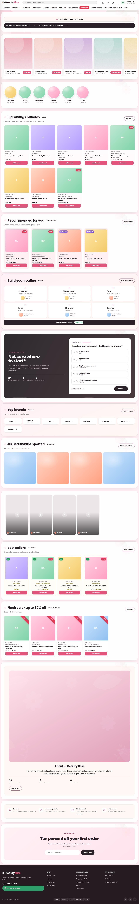

Lane PERF — the homepage, before and after
Left: the commit this lane branched from. Right: its tip. Same browser, same
fixture, animations disabled so the carousel is at the same offset in both.
390px
before · 390px390 · body 9259px/uploads/posters/perf-poster-1.jpg
after · 390px390 · body 9272px/img-cache/400/uploads/posters/perf-poster-1.jpg

1280px
before · 1280px1280 · body 8271px/uploads/posters/perf-poster-1.jpg
after · 1280px1280 · body 8271px/img-cache/400/uploads/posters/perf-poster-1.jpg

Full pages
before · 390px, full page
after · 390px, full page
before · 1280px, full page
after · 1280px, full page